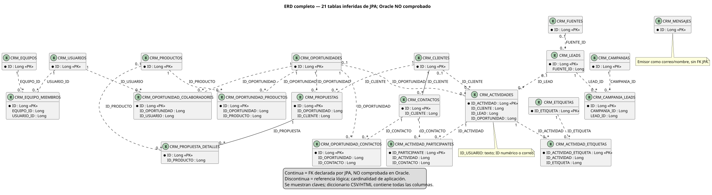

VIERNES CRM V1 · Evidencias académicas · 11/11/2026
Encargo docente ↔ implementación comprobada en E:\Viernes\Viernes
11. Datos
Vista de inferencias JPA; véase el informe conciliado para Oracle. Esta vista fue generada antes de la consulta de metadatos. La revisión posterior sí dispone de evidencia Oracle separada. Las 21 tablas, columnas y restricciones siguientes se deducen del mapeo JPA actual. Dos asociaciones declaran FK en JPA; la comprobación física se presenta por separado en 11_Datos.html.
El inventario contiene 21 entidades, 152 columnas físicas previstas (incluida ID_PROPUESTA declarada desde el padre), 21 PK IDENTITY, 14 restricciones UNIQUE declaradas y siete tablas puente N:M. No se hallaron @Index ni @Check en las entidades. No equivale a afirmar que Oracle carece de índices o CHECK.
11.1 Modelo y regla de lectura
Los nombres se normalizan a mayúsculas por legibilidad. NUMBER, VARCHAR2, DATE, CLOB y TIMESTAMP son traducciones orientativas: el dialecto y esquema efectivo pueden variar. El inicializador Java no es un DEFAULT SQL. La columna VERSION de propuestas es un entero comercial, no un @Version de bloqueo optimista. Las colecciones no son columnas; el ID_CLIENTE de Contacto se cuenta una sola vez aunque también lo use cliente.
Abrir ERD completo (SVG) · PlantUML editable · Diccionario CSV · Relaciones CSV

11.2 Integridad referencial y límites
| Origen | Destino | Evidencia |
|---|
| CRM_CONTACTOS.ID_CLIENTE | CRM_CLIENTES.ID | FK JPA; pendiente Oracle |
| CRM_PROPUESTA_DETALLES.ID_PROPUESTA | CRM_PROPUESTAS.ID | FK JPA; pendiente Oracle |
| CRM_LEADS.FUENTE_ID | CRM_FUENTES.ID | Lógica; pendiente Oracle |
| CRM_PROPUESTAS.ID_CLIENTE | CRM_CLIENTES.ID | Lógica; pendiente Oracle |
| CRM_PROPUESTAS.ID_OPORTUNIDAD | CRM_OPORTUNIDADES.ID | Lógica; pendiente Oracle |
| CRM_PROPUESTA_DETALLES.ID_PRODUCTO | CRM_PRODUCTOS.ID | Lógica; pendiente Oracle |
| CRM_ACTIVIDADES.ID_CLIENTE | CRM_CLIENTES.ID | Lógica; pendiente Oracle |
| CRM_ACTIVIDADES.ID_LEAD | CRM_LEADS.ID | Lógica; pendiente Oracle |
| CRM_ACTIVIDADES.ID_OPORTUNIDAD | CRM_OPORTUNIDADES.ID | Lógica; pendiente Oracle |
| CRM_ACTIVIDAD_ETIQUETAS.ID_ACTIVIDAD | CRM_ACTIVIDADES.ID_ACTIVIDAD | Lógica; pendiente Oracle |
| CRM_ACTIVIDAD_ETIQUETAS.ID_ETIQUETA | CRM_ETIQUETAS.ID_ETIQUETA | Lógica; pendiente Oracle |
| CRM_ACTIVIDAD_PARTICIPANTES.ID_ACTIVIDAD | CRM_ACTIVIDADES.ID_ACTIVIDAD | Lógica; pendiente Oracle |
| CRM_ACTIVIDAD_PARTICIPANTES.ID_CONTACTO | CRM_CONTACTOS.ID | Lógica; pendiente Oracle |
| CRM_OPORTUNIDAD_CONTACTOS.ID_OPORTUNIDAD | CRM_OPORTUNIDADES.ID | Lógica; pendiente Oracle |
| CRM_OPORTUNIDAD_CONTACTOS.ID_CONTACTO | CRM_CONTACTOS.ID | Lógica; pendiente Oracle |
| CRM_OPORTUNIDAD_PRODUCTOS.ID_OPORTUNIDAD | CRM_OPORTUNIDADES.ID | Lógica; pendiente Oracle |
| CRM_OPORTUNIDAD_PRODUCTOS.ID_PRODUCTO | CRM_PRODUCTOS.ID | Lógica; pendiente Oracle |
| CRM_OPORTUNIDAD_COLABORADORES.ID_OPORTUNIDAD | CRM_OPORTUNIDADES.ID | Lógica; pendiente Oracle |
| CRM_OPORTUNIDAD_COLABORADORES.ID_USUARIO | CRM_USUARIOS.ID | Lógica; pendiente Oracle |
| CRM_EQUIPO_MIEMBROS.EQUIPO_ID | CRM_EQUIPOS.ID | Lógica; pendiente Oracle |
| CRM_EQUIPO_MIEMBROS.USUARIO_ID | CRM_USUARIOS.ID | Lógica; pendiente Oracle |
| CRM_CAMPANIA_LEADS.CAMPANIA_ID | CRM_CAMPANIAS.ID | Lógica; pendiente Oracle |
| CRM_CAMPANIA_LEADS.LEAD_ID | CRM_LEADS.ID | Lógica; pendiente Oracle |
Las líneas continuas del ERD representan asociaciones con JoinColumn; las discontinuas son IDs lógicos, sin FK declarada en este código. Sus cardinalidades son las esperadas por la aplicación, no prueba de inexistencia de huérfanos. CRM_ACTIVIDADES.ID_USUARIO es String y se resuelve como ID numérico o correo; no debe dibujarse como una FK Long simple. CRM_MENSAJES conserva correo y nombre del emisor, no una FK de usuario. CLIENTE_NOMBRE en oportunidades es texto y el mapa deduce relaciones por nombre/contactos, no por ID_CLIENTE.
viernes-backend/src/main/java/com/viernes/actividades/adapters/out/persistence/RelacionValidationAdapter.java:52
11.3 Las siete asociaciones N:M
| Puente | Extremo A | Extremo B | Atributos propios |
|---|
| CRM_ACTIVIDAD_ETIQUETAS | CRM_ACTIVIDADES | CRM_ETIQUETAS | CREADO_EN, ORDEN |
| CRM_ACTIVIDAD_PARTICIPANTES | CRM_ACTIVIDADES | CRM_CONTACTOS | CREADO_EN |
| CRM_OPORTUNIDAD_CONTACTOS | CRM_OPORTUNIDADES | CRM_CONTACTOS | ROL, ES_DECISOR, CREADO_EN |
| CRM_OPORTUNIDAD_PRODUCTOS | CRM_OPORTUNIDADES | CRM_PRODUCTOS | CANTIDAD, CREADO_EN |
| CRM_OPORTUNIDAD_COLABORADORES | CRM_OPORTUNIDADES | CRM_USUARIOS | CREADO_EN |
| CRM_EQUIPO_MIEMBROS | CRM_EQUIPOS | CRM_USUARIOS | CREADO_EN |
| CRM_CAMPANIA_LEADS | CRM_CAMPANIAS | CRM_LEADS | CREADO_EN |
11.4 Restricciones e índices
| Tabla | UNIQUE | Columnas | Estado |
|---|
| CRM_ACTIVIDAD_ETIQUETAS | uk_actividad_etiqueta | ID_ACTIVIDAD, ID_ETIQUETA | JPA; índice físico pendiente |
| CRM_ACTIVIDAD_PARTICIPANTES | uk_actividad_contacto | ID_ACTIVIDAD, ID_CONTACTO | JPA; índice físico pendiente |
| CRM_CLIENTES | UK_CRM_CLIENTES_DOCUMENTO | TIPO_DOCUMENTO, NUMERO_DOCUMENTO | JPA; índice físico pendiente |
| CRM_EQUIPOS | Nombre por proveedor | NOMBRE | JPA; índice físico pendiente |
| CRM_EQUIPO_MIEMBROS | UK_EQUIPO_MIEMBRO | EQUIPO_ID, USUARIO_ID | JPA; índice físico pendiente |
| CRM_ETIQUETAS | uk_etiqueta_nombre_normalizado | NOMBRE_NORMALIZADO | JPA; índice físico pendiente |
| CRM_FUENTES | Nombre por proveedor | CODIGO | JPA; índice físico pendiente |
| CRM_CAMPANIA_LEADS | UK_CAMPANIA_LEAD | CAMPANIA_ID, LEAD_ID | JPA; índice físico pendiente |
| CRM_OPORTUNIDAD_COLABORADORES | uk_oportunidad_colaborador | ID_OPORTUNIDAD, ID_USUARIO | JPA; índice físico pendiente |
| CRM_OPORTUNIDAD_CONTACTOS | uk_oportunidad_contacto | ID_OPORTUNIDAD, ID_CONTACTO | JPA; índice físico pendiente |
| CRM_OPORTUNIDAD_PRODUCTOS | uk_oportunidad_producto | ID_OPORTUNIDAD, ID_PRODUCTO | JPA; índice físico pendiente |
| CRM_PRODUCTOS | Nombre por proveedor | CODIGO | JPA; índice físico pendiente |
| CRM_PROPUESTAS | Nombre por proveedor | NUMERO_PROPUESTA | JPA; índice físico pendiente |
| CRM_USUARIOS | Nombre por proveedor | CORREO | JPA; índice físico pendiente |
La unicidad de una PK/UK suele apoyarse en índices físicos; no se inventa su nombre ni su cantidad. nullable=false declara obligatoriedad en el mapeo, y @Enumerated(STRING) declara la serialización del enum; un CHECK efectivo depende del DDL aplicado. CascadeType.ALL y orphanRemoval son semántica ORM, no evidencia de ON DELETE CASCADE.
11.5 Diccionario campo por campo
CRM_ACTIVIDADES · actividades
viernes-backend/src/main/java/com/viernes/actividades/adapters/out/persistence/entity/ActividadEntity.java:1
| Columna / Java | Tipo Java → SQL orientativo | NULL | Regla y relación | Inicialización Java | Fuente |
|---|
ID_ACTIVIDAD
id | Long → NUMBER(19,0) | No | PK; IDENTITY
— | Sin inicializador Java | viernes-backend/src/main/java/com/viernes/actividades/adapters/out/persistence/entity/ActividadEntity.java:15 |
ID_USUARIO
idUsuario | String → VARCHAR2(255) | Sí (default JPA) | —
— | Sin inicializador Java | viernes-backend/src/main/java/com/viernes/actividades/adapters/out/persistence/entity/ActividadEntity.java:18 |
ID_CLIENTE
idCliente | Long → NUMBER(19,0) | Sí (default JPA) | —
CRM_CLIENTES.ID [Lógica] | Sin inicializador Java | viernes-backend/src/main/java/com/viernes/actividades/adapters/out/persistence/entity/ActividadEntity.java:21 |
ID_LEAD
idLead | Long → NUMBER(19,0) | Sí (default JPA) | —
CRM_LEADS.ID [Lógica] | Sin inicializador Java | viernes-backend/src/main/java/com/viernes/actividades/adapters/out/persistence/entity/ActividadEntity.java:24 |
ID_OPORTUNIDAD
idOportunidad | Long → NUMBER(19,0) | Sí (default JPA) | —
CRM_OPORTUNIDADES.ID [Lógica] | Sin inicializador Java | viernes-backend/src/main/java/com/viernes/actividades/adapters/out/persistence/entity/ActividadEntity.java:27 |
TIPO
tipo | TipoActividad → VARCHAR2(255) | No | Enum STRING: LLAMADA, REUNION, TAREA, SEGUIMIENTO; CHECK físico no comprobado
— | Sin inicializador Java | viernes-backend/src/main/java/com/viernes/actividades/adapters/out/persistence/entity/ActividadEntity.java:31 |
TITULO
titulo | String → VARCHAR2(255) | No | —
— | Sin inicializador Java | viernes-backend/src/main/java/com/viernes/actividades/adapters/out/persistence/entity/ActividadEntity.java:34 |
DESCRIPCION
descripcion | String → CLOB | Sí (default JPA) | —
— | Sin inicializador Java | viernes-backend/src/main/java/com/viernes/actividades/adapters/out/persistence/entity/ActividadEntity.java:38 |
FECHA
fecha | LocalDateTime → TIMESTAMP (precisión por proveedor) | No | —
— | Sin inicializador Java | viernes-backend/src/main/java/com/viernes/actividades/adapters/out/persistence/entity/ActividadEntity.java:41 |
ESTADO
estado | EstadoActividad → VARCHAR2(255) | No | Enum STRING: PENDIENTE, EN_PROCESO, COMPLETADA, CANCELADA; CHECK físico no comprobado
— | Sin inicializador Java | viernes-backend/src/main/java/com/viernes/actividades/adapters/out/persistence/entity/ActividadEntity.java:45 |
CREADO_EN
creadoEn | LocalDateTime → TIMESTAMP (precisión por proveedor) | No | updatable=false
— | Sin inicializador Java | viernes-backend/src/main/java/com/viernes/actividades/adapters/out/persistence/entity/ActividadEntity.java:48 |
CRM_ACTIVIDAD_ETIQUETAS · actividades
viernes-backend/src/main/java/com/viernes/actividades/adapters/out/persistence/entity/ActividadEtiquetaEntity.java:1
CRM_ACTIVIDAD_PARTICIPANTES · actividades
viernes-backend/src/main/java/com/viernes/actividades/adapters/out/persistence/entity/ActividadParticipanteEntity.java:1
CRM_CLIENTES · clientes
viernes-backend/src/main/java/com/viernes/clientes/adapters/out/persistence/entity/ClienteEntity.java:1
CRM_CONTACTOS · clientes
viernes-backend/src/main/java/com/viernes/clientes/adapters/out/persistence/entity/ContactoEntity.java:1
CRM_EQUIPOS · equipos
viernes-backend/src/main/java/com/viernes/equipos/adapters/out/persistence/entity/EquipoEntity.java:1
CRM_EQUIPO_MIEMBROS · equipos
viernes-backend/src/main/java/com/viernes/equipos/adapters/out/persistence/entity/EquipoMiembroEntity.java:1
CRM_ETIQUETAS · etiquetas
viernes-backend/src/main/java/com/viernes/etiquetas/adapters/out/persistence/entity/EtiquetaEntity.java:1
CRM_FUENTES · leads
viernes-backend/src/main/java/com/viernes/leads/adapters/out/persistence/entity/FuenteEntity.java:1
CRM_LEADS · leads
viernes-backend/src/main/java/com/viernes/leads/adapters/out/persistence/entity/LeadEntity.java:1
CRM_CAMPANIAS · marketing
viernes-backend/src/main/java/com/viernes/marketing/adapters/out/persistence/entity/CampaniaEntity.java:1
CRM_CAMPANIA_LEADS · marketing
viernes-backend/src/main/java/com/viernes/marketing/adapters/out/persistence/entity/CampaniaLeadEntity.java:1
CRM_MENSAJES · mensajeria
viernes-backend/src/main/java/com/viernes/mensajeria/adapters/out/persistence/entity/MensajeEntity.java:1
CRM_OPORTUNIDAD_COLABORADORES · oportunidades
viernes-backend/src/main/java/com/viernes/oportunidades/adapters/out/persistence/entity/OportunidadColaboradorEntity.java:1
CRM_OPORTUNIDAD_CONTACTOS · oportunidades
viernes-backend/src/main/java/com/viernes/oportunidades/adapters/out/persistence/entity/OportunidadContactoEntity.java:1
CRM_OPORTUNIDADES · oportunidades
viernes-backend/src/main/java/com/viernes/oportunidades/adapters/out/persistence/entity/OportunidadEntity.java:1
CRM_OPORTUNIDAD_PRODUCTOS · oportunidades
viernes-backend/src/main/java/com/viernes/oportunidades/adapters/out/persistence/entity/OportunidadProductoEntity.java:1
CRM_PRODUCTOS · productos
viernes-backend/src/main/java/com/viernes/productos/adapters/out/persistence/entity/ProductoEntity.java:1
CRM_PROPUESTA_DETALLES · propuestas
viernes-backend/src/main/java/com/viernes/propuestas/adapters/out/persistence/entity/DetallePropuestaEntity.java:1
CRM_PROPUESTAS · propuestas
viernes-backend/src/main/java/com/viernes/propuestas/adapters/out/persistence/entity/PropuestaEntity.java:1
| Columna / Java | Tipo Java → SQL orientativo | NULL | Regla y relación | Inicialización Java | Fuente |
|---|
ID
id | Long → NUMBER(19,0) | No | PK; IDENTITY
— | Sin inicializador Java | viernes-backend/src/main/java/com/viernes/propuestas/adapters/out/persistence/entity/PropuestaEntity.java:20 |
NUMERO_PROPUESTA
numeroPropuesta | String → VARCHAR2(50) | No | UNIQUE
— | Sin inicializador Java | viernes-backend/src/main/java/com/viernes/propuestas/adapters/out/persistence/entity/PropuestaEntity.java:23 |
ID_OPORTUNIDAD
idOportunidad | Long → NUMBER(19,0) | No | —
CRM_OPORTUNIDADES.ID [Lógica] | Sin inicializador Java | viernes-backend/src/main/java/com/viernes/propuestas/adapters/out/persistence/entity/PropuestaEntity.java:26 |
ID_CLIENTE
idCliente | Long → NUMBER(19,0) | No | —
CRM_CLIENTES.ID [Lógica] | Sin inicializador Java | viernes-backend/src/main/java/com/viernes/propuestas/adapters/out/persistence/entity/PropuestaEntity.java:29 |
CLIENTE_NOMBRE
clienteNombre | String → VARCHAR2(150) | Sí (default JPA) | —
— | Sin inicializador Java | viernes-backend/src/main/java/com/viernes/propuestas/adapters/out/persistence/entity/PropuestaEntity.java:32 |
ESTADO
estado | EstadoPropuesta → VARCHAR2(20) | No | Enum STRING: BORRADOR, ENVIADA, APROBADA, RECHAZADA, CANCELADA; CHECK físico no comprobado
— | EstadoPropuesta.BORRADOR | viernes-backend/src/main/java/com/viernes/propuestas/adapters/out/persistence/entity/PropuestaEntity.java:37 |
VERSION
version | Integer → NUMBER(10,0) | No | —
— | 1 | viernes-backend/src/main/java/com/viernes/propuestas/adapters/out/persistence/entity/PropuestaEntity.java:41 |
SUBTOTAL
subtotal | BigDecimal → NUMBER(14,2) | No | —
— | Sin inicializador Java | viernes-backend/src/main/java/com/viernes/propuestas/adapters/out/persistence/entity/PropuestaEntity.java:44 |
DESCUENTO
descuento | BigDecimal → NUMBER(14,2) | No | —
— | BigDecimal.ZERO | viernes-backend/src/main/java/com/viernes/propuestas/adapters/out/persistence/entity/PropuestaEntity.java:48 |
TOTAL
total | BigDecimal → NUMBER(14,2) | No | —
— | Sin inicializador Java | viernes-backend/src/main/java/com/viernes/propuestas/adapters/out/persistence/entity/PropuestaEntity.java:51 |
RESPONSABLE
responsable | String → VARCHAR2(100) | Sí (default JPA) | —
— | Sin inicializador Java | viernes-backend/src/main/java/com/viernes/propuestas/adapters/out/persistence/entity/PropuestaEntity.java:54 |
FECHA_EMISION
fechaEmision | LocalDate → DATE | No | —
— | Sin inicializador Java | viernes-backend/src/main/java/com/viernes/propuestas/adapters/out/persistence/entity/PropuestaEntity.java:57 |
FECHA_VENCIMIENTO
fechaVencimiento | LocalDate → DATE | Sí (default JPA) | —
— | Sin inicializador Java | viernes-backend/src/main/java/com/viernes/propuestas/adapters/out/persistence/entity/PropuestaEntity.java:60 |
OBSERVACIONES
observaciones | String → CLOB | Sí (default JPA) | —
— | Sin inicializador Java | viernes-backend/src/main/java/com/viernes/propuestas/adapters/out/persistence/entity/PropuestaEntity.java:64 |
CREADO_EN
creadoEn | LocalDateTime → TIMESTAMP (precisión por proveedor) | No | updatable=false
— | LocalDateTime.now() | viernes-backend/src/main/java/com/viernes/propuestas/adapters/out/persistence/entity/PropuestaEntity.java:68 |
CRM_USUARIOS · usuarios
viernes-backend/src/main/java/com/viernes/usuarios/adapters/out/persistence/entity/UsuarioEntity.java:1
11.6 Protocolo de comprobación Oracle
Se adjunta SQL de solo lectura: USER_TAB_COLUMNS, USER_CONSTRAINTS, USER_CONS_COLUMNS, USER_INDEXES, USER_IND_COLUMNS y USER_TAB_IDENTITY_COLS. Ejecutarlo conectado al esquema de la aplicación, sin incluir contraseñas en comandos o informes. La extracción posterior ejecutó consultas SELECT equivalentes en transacciones READ ONLY; véanse los CSV oracle_*. Registrar fecha, esquema, versión, salida y discrepancias antes de convertir cualquier inferencia en hecho Oracle.